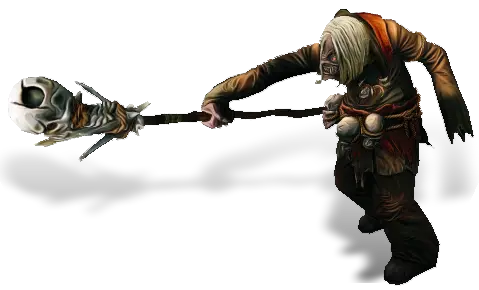
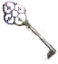

Открыть в интерактивной вики →

| Уровень | лёгк. 65 / норм. 80 / тяжел. 100 |
|---|---|
| Зоны атаки | , дальняя, ментальная |
| Шанс дропа 100% — уровни | лёгк. 1-70 / норм. 1-70 / тяжел. 1-80 |
| Шанс дропа 90% — уровни | лёгк. 71-85 / норм. 71-85 / тяжел. 91-105 |
| Шанс дропа 70% — уровни | лёгк. 86+ / норм. 86+ / тяжел. 106+ |
| Группа боссов | Страх |
| Сила (PvE) | лёгк. 3012 / норм. 4725 / тяжел. 7233 |
| Аспект арены | Solnai |
| Здоровье | лёгк. 10 000 / норм. 29 000 / тяжел. 52 000 |
| Мана | 8000 |
| Выносливость | 2000 |
Команда


Навыки


Дроп
 Корундовый ингибитор
Корундовый ингибитор  Средняя Фляга Знания
Средняя Фляга Знания  Средняя Фляга Мощи
Средняя Фляга Мощи  Средняя Фляга Маны
Средняя Фляга Маны  Средняя Фляга Здоровья
Средняя Фляга Здоровья  Элементарный глиф
Элементарный глиф  Ученический глиф
Ученический глиф 
 Путь страха
Путь страха 

 II-V
II-V  Гроссмейстерский глиф
Гроссмейстерский глиф 
 Даймонит 10
Даймонит 10 | Рары | Синергетики | Эпики | |||
 Рары Рары Рары Рары Рары Рары Рары Рары Рары для питомцев Рары для питомцев | 20-60 ур. |  Эпики Эпики | |||
Прочее:  Путь страха Путь страха  Средняя Фляга Маны Средняя Фляга Маны  Средняя Фляга Здоровья Средняя Фляга Здоровья  Средняя Фляга Мощи Средняя Фляга Мощи  Средняя Фляга Знания Средняя Фляга Знания  Корундовый ингибитор Корундовый ингибитор | |||||
Требования для входа
лёгк.:
норм.: Ключ от лаборатории ×5
тяжел.:Путь страха Ключ от лаборатории ×5

Ключ от лаборатории ×2норм.: Ключ от лаборатории ×5
тяжел.:
Путь страха Ключ от лаборатории ×5Путь по картам
Статистика
 |  |  | |||
| Уровень: 65 | Уровень: 80 | Уровень: 100 | |||
Здоровье: 15 000 Мана: 8 000 Выносливость: 2 000 | Здоровье: 29 000 Мана: 8 000 Выносливость: 2 000 | Здоровье: 52 000 Мана: 8 000 Выносливость: 2 000 |
Умения
| Буря Шар энергии Молния | Теневая аура Отупление Булавка в глаз Электромагнитные помехи Отравление |
Иммунитеты / особые умения
-
Локация
Пассаж Фёдора